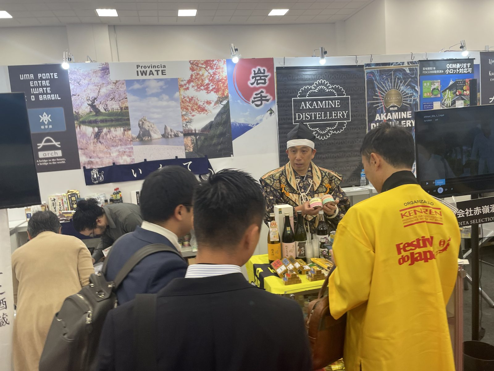
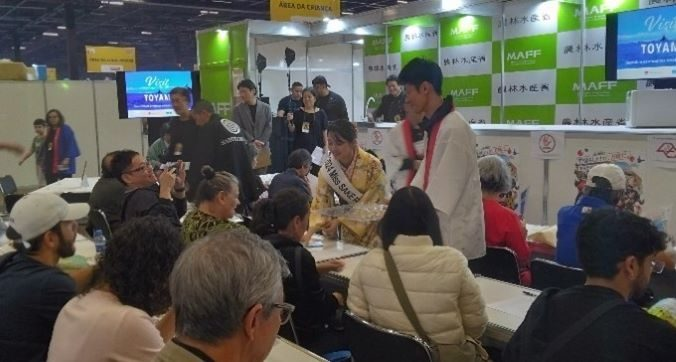
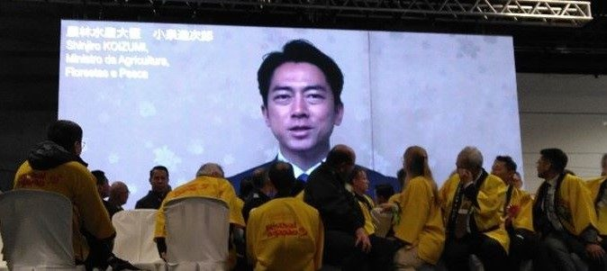
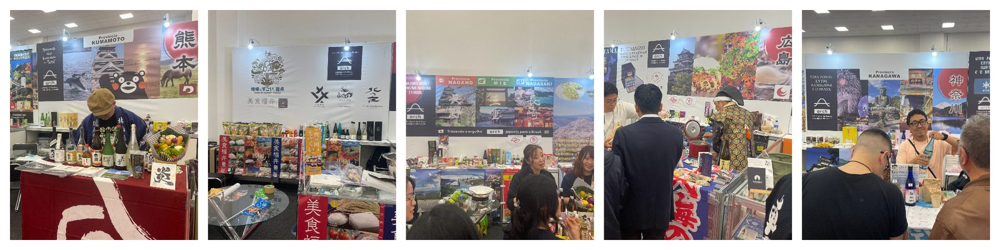
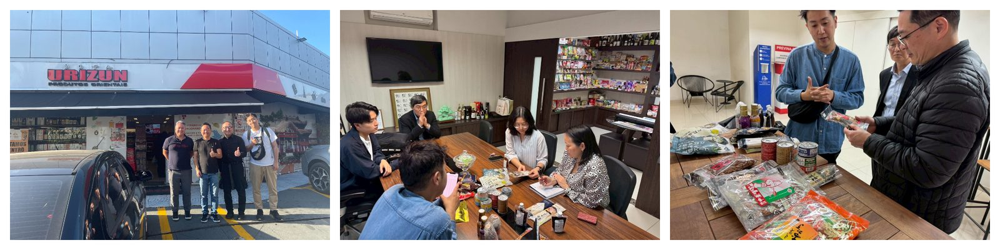
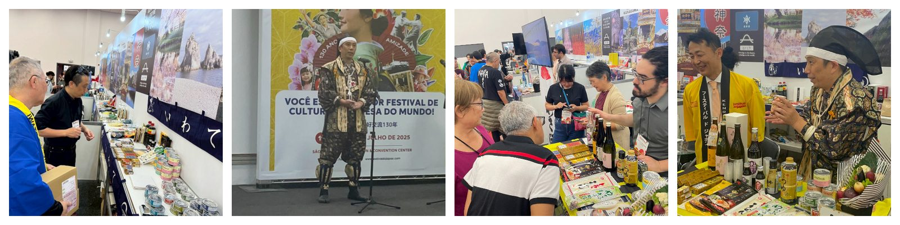

第26回サンパウロ日本祭りには約20万人が来場。同時開催の第2回ふるさと「いいもの展」は47都道府県から104社が出展するB2B商談会となり、現地インポーター・小売店・レストラン関係者ら約1,100名が来場しました。弊社は6ブース8都道府県（熊本・長崎・広島・三重・神奈川・福井・長野・岩手）を担当し、4日間で600人以上への試飲・試供、約80商品の展示・PR・商談を実施。26商品で見積もりを提案中、うち10商品ほどはすでに輸出に向けて始動しています。7月12日の懇親会では、サムライ姿の西田が2年前からの出展経緯に触れながら挨拶を行いました。






対象、予算、時期が未定でも構いません。現在分かっていることと、まだ決まっていないことを整理します。
同様の海外事業を相談